地政学
カルタヘナはカリブ海と南米内陸を結ぶコロンビアの海の門です。植民地期の防衛都市から、今は港湾、海軍、観光、会議、島嶼交通が集まる沿岸要衝へ変わりました。海上安全と国内物流を同時に担う重要都市です。

🇨🇴 コロンビア / カリブ海沿岸 / World City Atlas
城壁旧市街、要塞、カリブ海の港湾、石油化学、リゾート高層住宅、アフロカリブ文化、湿地と水害リスクが近距離で重なるコロンビア沿岸の歴史都市です。
都市の骨格
カルタヘナは絵葉書の旧市街だけでなく、コンテナ港、石油化学地区、マングローブ、島々への船、庶民地区、高層ホテルが同じ湾岸に密集する都市です。海は観光の背景である前に、雇用、記憶、危険、移動を分ける都市の基盤です。
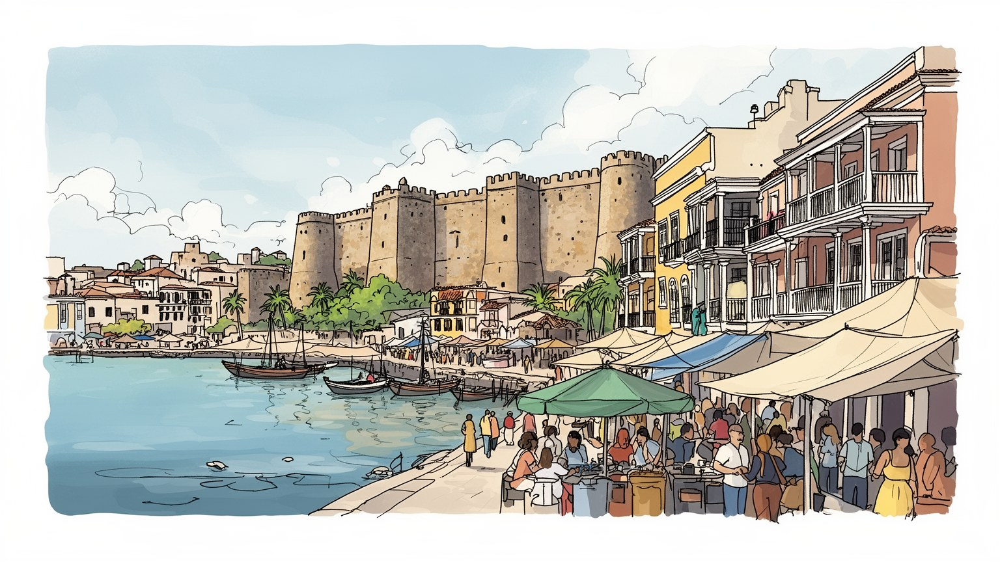
カルタヘナはカリブ海と南米内陸を結ぶコロンビアの海の門です。植民地期の防衛都市から、今は港湾、海軍、観光、会議、島嶼交通が集まる沿岸要衝へ変わりました。海上安全と国内物流を同時に担う重要都市です。
港湾、観光、石油化学、物流、建設、飲食、船舶関連の仕事が都市を動かします。旧市街の華やかさの裏に、清掃、警備、厨房、港湾作業、非公式販売、長い通勤があり、所得差が街と家計を分ける厳しい労働の現実です。
カトリックの祝祭、アフロカリブの音楽、舞踊、食、海辺の信仰、先住民や移民の記憶が重なります。教会や広場は観光地である前に、家族行事、祈り、祭り、追悼を受け止める地域の尊厳を守る静かな大切な場所です。
旅人は城壁、要塞、島、ボカグランデを巡りますが、住民には暑さ、冠水、家賃、雇用、学校、交通が切実です。観光収入が増えるほど、旧市街の住みやすさと周辺地区の公共サービスの公平性が強く深く問われます。
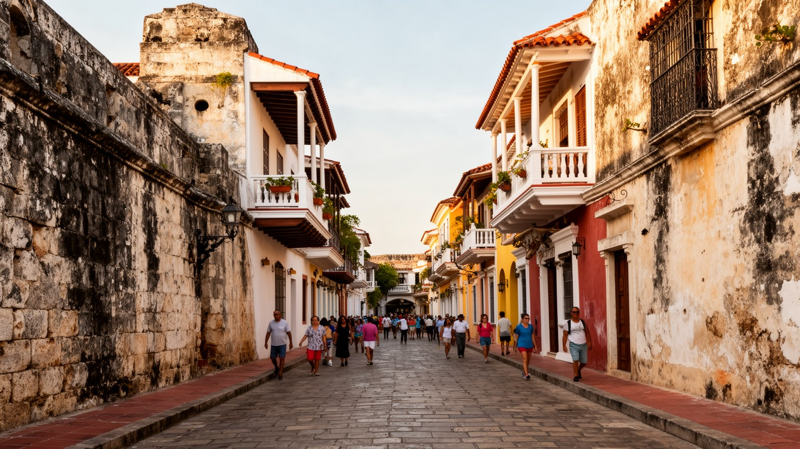
カルタヘナ旧市街は、色鮮やかなバルコニー、教会、修道院、広場、城壁が密集する世界的な遺産景観です。石畳や中庭の美しさは都市の誇りであり、ホテル、レストラン、結婚式、文化イベント、夜の散策を支えます。しかし遺産保全は建物を残すだけではありません。修復費、規制、家賃、短期滞在、土産物化が進むと、長く暮らした住民や日常の商いは外へ押し出されやすくなります。旧市街は見せるための舞台になりやすい一方、学校、食料品店、教会の行事、近所づきあいが残らなければ生活都市として痩せてしまいます。保存の成功は、外壁の色や観光収入だけでなく、住む人、働く人、祈る人、夜に清掃する人が尊厳を保てるかで測る必要があります。夜の照明で整えられた街路も、朝にはごみ回収、商品の搬入、警備員の交代が始まります。旧市街を生きた場所として保つには、観光の快適さだけでなく、日常を支える小さな機能を残す視点が欠かせません。保存は景観の管理であると同時に、住民の居場所を守る制度でもあります。城門をくぐる観光客の流れと、学校へ向かう子ども、教会へ通う高齢者、配達に急ぐ労働者の流れを同じ通りで見ると、遺産地区が舞台装置ではなく複数の時間を抱く場所だと分かります。修復された壁の内側に生活の余白を残せるかが、この都市の品位を決めます。それが保存の実質です。
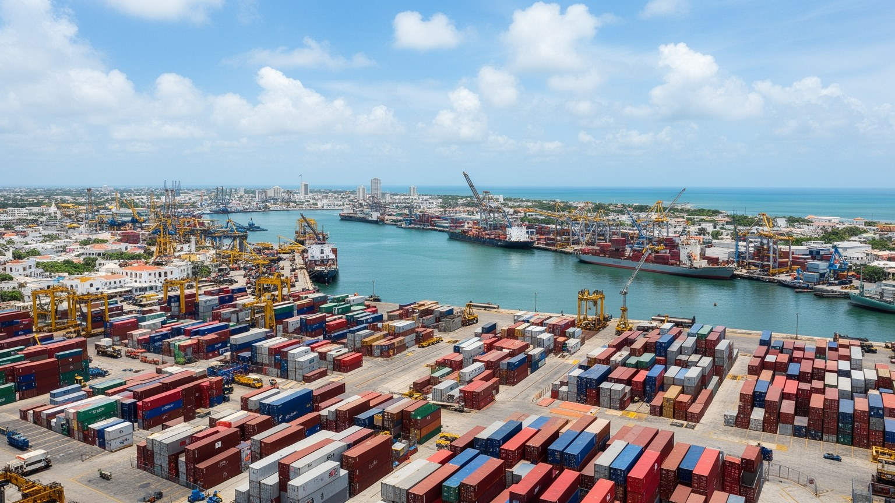
カルタヘナの経済を観光だけで説明することはできません。湾岸にはコンテナ港、貨物ターミナル、造船、燃料、石油化学、工業団地があり、コロンビアの対外物流と製造を支えています。マンモナル地区の工業集積は、精製、化学、プラスチック、輸出入、保守、輸送、倉庫の仕事を生み、旧市街のホテルとは違う時間で都市を動かします。港湾労働には高度な機械操作、危険物管理、夜勤、道路輸送、税関手続きが関わります。港が成長すれば雇用と税収は増えますが、周辺環境、交通渋滞、大気、水質、労働安全への負担も大きくなります。大型船とクルーズ船、工業地帯と海辺のリゾート、漁業と港湾開発は同じ水域を分け合います。カルタヘナの産業を読むには、写真に映る城壁だけでなく、湾の奥で動くクレーン、タンク、トラック、作業服の人びとを見る必要があります。貨物の流れは、住民の仕事だけでなく、道路の騒音、港周辺の空気、湾の水質にも影響します。産業の強さは、環境と労働を軽く扱わない制度で支えられるべきです。港湾の利益が道路、排水、教育、医療へ戻らなければ、都市は外貨を稼ぎながら近隣地区の負担を増やします。工業都市としての責任を見えるようにすることが、観光都市としての信頼も支えます。通勤路の混雑や事故も、港の効率と住民の生活を同時に左右する産業の課題です。
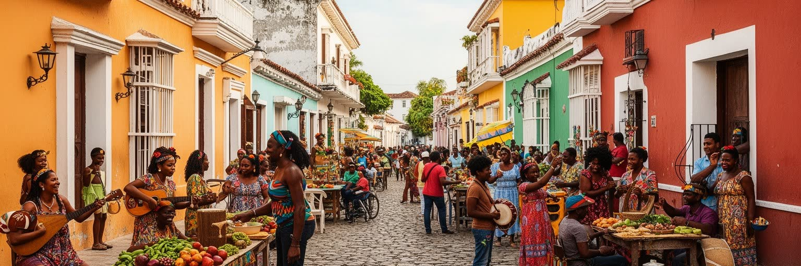
カルタヘナの文化は、スペイン植民地の建築だけでなく、アフリカ系住民、先住民、カリブ海交易、内陸からの移住が混ざり合って形づくられました。奴隷化された人びとの歴史、パレンケの抵抗、太鼓、踊り、口承、祭り、髪型、料理、海辺の生活は、都市の深い記憶を伝えます。カトリックの教会や聖人祭は広場の風景を作りますが、信仰は公式儀礼だけでなく、家族、近所、音楽、死者への思い、海で働く人の祈りにも現れます。観光は色鮮やかな衣装や音楽を前面に出しますが、それを単なる演出として消費すると、差別、貧困、抵抗、誇りの歴史が見えなくなります。文化を読むには、誰が歌い、誰が踊り、誰が利益を得て、誰の声が紹介されるのかを問う必要があります。教会の鐘、太鼓、屋台の匂い、海風は、別々の要素ではなく一つの都市文化を作ります。祈りと音楽は、傷を忘れるためではなく、記憶を抱えて生きる方法にもなります。日々の挨拶にも海の歴史が残ります。広場で写真に撮られる衣装の華やかさと、周辺地区で続く家族の祭礼や練習の時間を切り離さないことが大切です。文化の価値は見せる場面だけでなく、見せない知識、地域の誇り、若者が受け継ぐ表現にも宿ります。学校や地域団体の活動、楽器を直す職人、髪を編む店、家庭の台所も、文化を次世代へ渡す土台です。地域の時間として続きます。
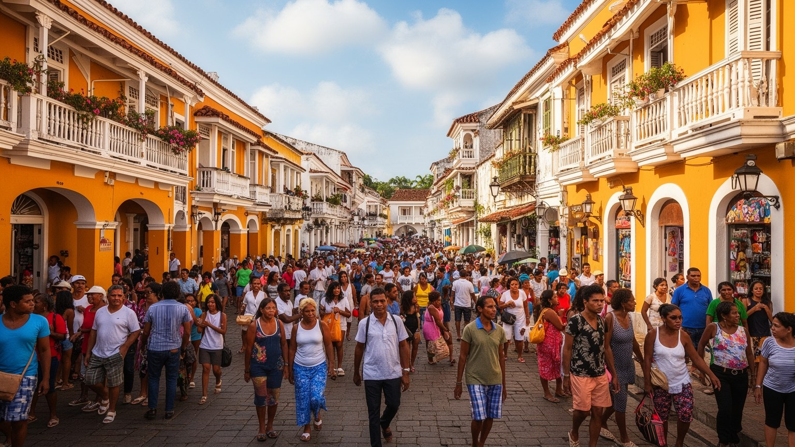
カルタヘナ観光は、城壁散策、要塞見学、島への日帰り船、クルーズ、結婚式、会議、夜の飲食で成り立ちます。旅行者が感じる陽気さの背後には、ホテル清掃、厨房、警備、ガイド、馬車、船員、露天販売、土産物、写真撮影、音楽演奏、配車、建物修繕の労働があります。これらの仕事は収入機会を広げる一方、季節変動、チップ依存、非公式雇用、長時間労働、社会保障の不足を抱えやすい。旧市街やビーチで声をかける売り手は、旅行者には強く見えることもありますが、その背景には激しい競争と生活費の上昇があります。観光が成長するほど、中心部の地価は上がり、働く人は遠い地区から通うようになります。都市の成功を訪問者数だけで測ると、働く人の住まい、移動、休息が見えなくなります。さらに、観光客の安全を守るための警備や規制は、露天商や若者の居場所を狭めることがあります。誰が正式な観光経済へ入れ、誰が路上で交渉するしかないのかを見れば、旧市街のにぎわいは階層の地図としても読めます。船着き場や夜の広場では、短い滞在の楽しさと長い労働時間が隣り合います。観光の質を高めるには、接客の笑顔だけでなく、賃金、休憩、安全、通勤、子どもの世話まで都市政策として扱う必要があります。休暇の街で働く人の休息を確保することが、都市の持続性を左右します。不可欠な視点です。
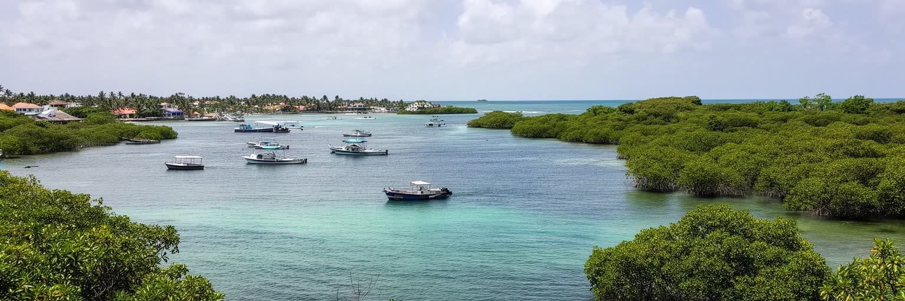
カルタヘナの地形は、カリブ海、内湾、島、砂州、マングローブ、城壁で読めます。旧市街は海からの攻撃を意識して築かれ、分厚い城壁、要塞、砲台、狭い門が植民地港の緊張を今も伝えます。一方で、同じ海は交易、移民、観光、漁、島への移動を開く通路でもありました。湾内には現代の港湾施設が並び、外側にはボカグランデの高層ホテルと住宅、さらに湿地や庶民地区が広がります。街を歩くと、石畳の広場から数分で船着き場、車の渋滞、排水の悪い低地、観光客で混む海辺へ出ます。海は美しい背景ではなく、都市の安全、雇用、地価、気候リスクを同時に決める条件です。さらに、島々への観光船、漁に向かう小舟、貨物船、海軍の施設が同じ水面を分け合うため、海の使い方は常に調整を求められます。砂浜を楽しむ人の近くで、港のトラックが走り、低地の住民は排水路の詰まりを気にします。カルタヘナの地図は、水辺をめぐる利益、危険、記憶が重なった生活の図です。島への日帰り観光は明るい海を強調しますが、船の安全、廃棄物、サンゴやマングローブの保全、島民の生活費にも影響します。湾を使う権利を調整できるかが、海辺の魅力を長く保つ条件です。海岸の利用は短期の収益だけでなく、島民の水、電力、廃棄物、漁場を含めて考える必要があります。海は共有の生活基盤でもあります。常に。
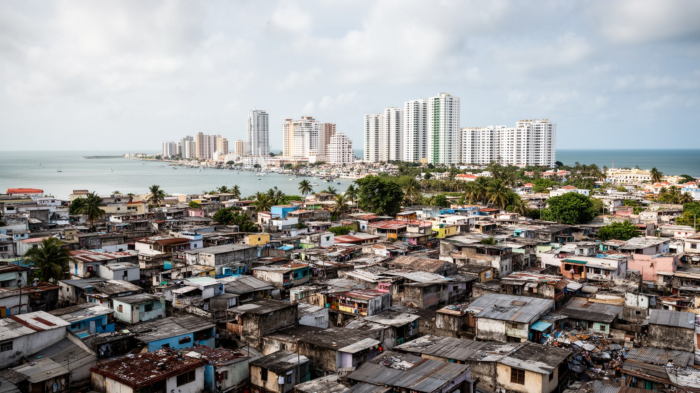
カルタヘナの住まいは、旧市街の修復建築、ボカグランデの高層ホテルとマンション、内陸の庶民地区、湿地に近い低地の住宅地まで大きく分かれます。海辺の高層化は都市に投資と税収をもたらし、観光客や富裕層に眺望と安全を売ります。一方で、そこで働く清掃員、警備員、調理人、販売員の多くは、家賃の安い遠い地区からバスやバイクで通います。住宅の差は、海の見え方だけでなく、学校、医療、排水、治安、通勤時間、公共交通へのアクセスの差として現れます。湿地や低地では豪雨時の冠水、未舗装道路、公共サービスの不足が生活を圧迫します。観光地の近くほど不動産価格が上がり、長期住民は中心から離れやすい。美しい湾岸は、誰にとっての眺望で、誰にとっての通勤先なのかを問いかけます。子どもが学校へ通う道、雨の日に水が引くまで待つ時間、夜に帰るバスの本数は、都市の実感を決めます。公共交通、排水、医療、保育を住宅政策と一緒に考えなければ、観光の成長は生活の分断を深めます。住宅問題は旧市街の外側だけにあるのではなく、観光地の労働を誰が担うのかという中心の問題です。海辺の価値を共有できる都市でなければ、湾の美しさは格差を見下ろす眺望になってしまいます。住まいは屋根だけでなく、都市に参加する権利そのものです。通勤の負担は毎日の時間も奪います。
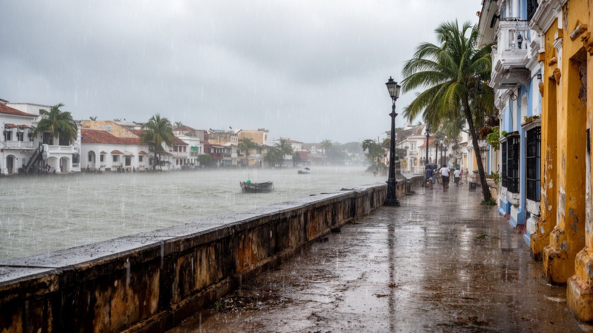
カルタヘナは熱帯の暑さ、湿気、強い雨、高潮、海面上昇の影響を受けやすい都市です。旧市街の石畳やボカグランデの海岸は観光に魅力的ですが、低地では排水不良や冠水が生活と商売をすぐに止めます。マングローブや湿地は自然の緩衝帯であり、水鳥や魚の生息地であると同時に、都市開発の圧力を受ける場所でもあります。気候変動が進むと、海岸侵食、塩害、強雨、熱中症、感染症、インフラの劣化が重なり、貧しい地区ほど被害を受けやすくなります。気候対策は護岸や排水路だけでは足りません。涼しい公共空間、木陰、飲み水、早期警報、避難、住宅の改善、湿地保全、廃棄物管理が一体で必要です。観光地としての美しい海を守ることは、住民の安全を守ることと切り離せません。暑さは屋外労働者、露天商、港湾作業員、子ども、高齢者に強く影響します。排水路の清掃、湿地の保全、涼める公共施設は、目立たないが命を守る都市基盤です。日常の備えが観光の安心も支えます。冠水が起きるたびに、学校へ行く道、商品の搬入、通院、港湾の作業、観光客の移動が同時に乱れます。気候リスクを環境問題だけでなく、所得、住宅、交通、健康の問題として扱うことが沿岸都市の成熟を示します。海とともに暮らす技術を更新できるかが、カルタヘナの未来を左右します。暑熱対策も都市福祉の一部です。
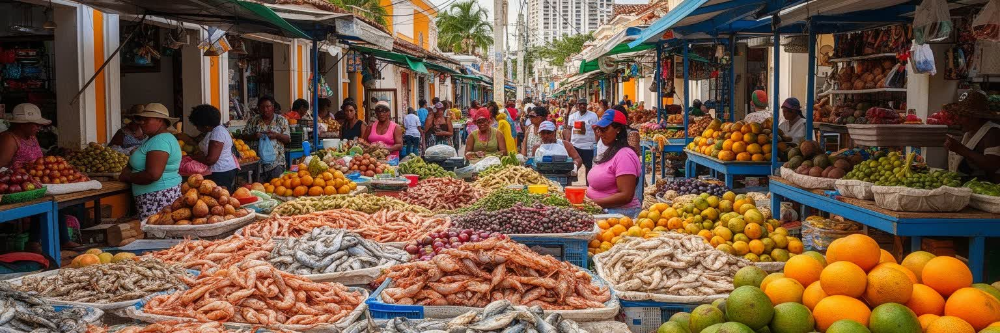
カルタヘナの食は、魚介、ココナツライス、揚げ物、果物、アレパ、屋台、家庭料理、観光レストランが重なります。港町らしい味はカリブ海との結びつきを示しますが、料理の背後には市場、漁、冷蔵物流、厨房労働、家族の仕込みがあります。旧市街の洗練された店と、通勤者が使う安い食堂、路上の果物売りは、同じ都市の違う経済を映します。市場では魚を運ぶ人、野菜を並べる人、早朝から煮込みを作る人、氷や水を確保する人が街の食を支えます。観光客にとっての一皿は短い体験でも、売る側には仕入れ、場所代、天候、家族の生活があります。音楽も食と同じように、名物である前に日常の表現です。サルサ、チャンペタ、クンビア、太鼓、ストリート演奏は、アフロカリブの記憶、若者の誇り、近所のつながりを担います。味やリズムは都市の入口ですが、その奥には練習、規制、場所の取り合い、収入の不安定さがあります。日常の食卓と舞台化された音楽を往復してこそ、この街の文化は立体的に見えます。市場の衛生、冷蔵設備、排水、交通が整うほど、家庭の食卓も観光の食体験も安定します。皿の上の明るい色は、海、農村、港、台所、路上販売を結ぶ長い労働の結果です。食を通じて都市を見るなら、味の豊かさと働く人の条件を同じテーブルに置く必要があります。市場は生活の心臓部でもあります。
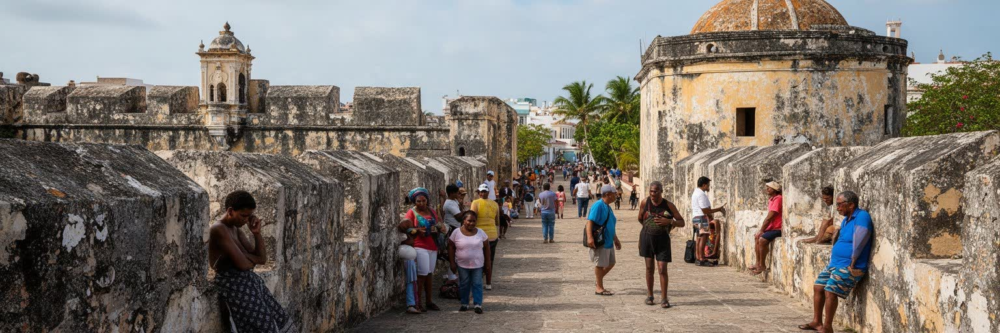
カルタヘナはスペイン帝国のカリブ海防衛と交易の拠点として重要になりました。銀、商品、人、軍艦、宣教師、役人、奴隷化されたアフリカ人がこの港を通り、都市は富と暴力の両方を蓄えました。サン・フェリペ・デ・バラハス要塞や城壁は、海賊や敵国艦隊への備えであり、同時に植民地支配の装置でもありました。独立後も、港は内陸の生産物を世界へ出し、海外の物資を国内へ入れる門であり続けます。現在のカルタヘナには海軍、国際クルーズ、コンテナ物流、会議観光が集まり、カリブ海地域との接続も濃い。地政学は過去の要塞だけでなく、船の航路、燃料、港湾警備、麻薬取引対策、移民、気候変動への備えとして続いています。会議場や高級ホテルで語られる国際都市の顔も、要塞の石に刻まれた軍事都市の記憶と無関係ではありません。海路を持つことは、交易の自由と同時に密輸、疫病、難民、治安への備えを必要にします。カルタヘナは、外へ開く都市でありながら、誰を迎え、何を防ぐかを選び続けてきた都市です。コロンビア国内の武力紛争や避難、貧困、麻薬経済の影も、沿岸都市の治安と移住の現実に関わります。要塞を美しい遺産として眺めるだけでなく、暴力を受けた人びとの記憶を公共空間でどう扱うかが問われます。記憶を語る場がなければ、観光の明るさは痛みを覆い隠します。
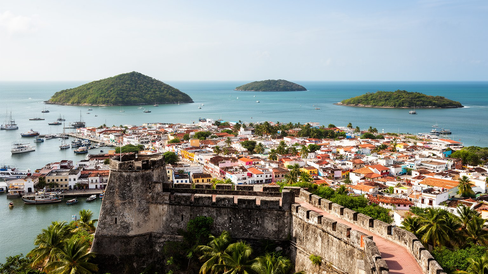
カルタヘナは、城壁旧市街の美しさで強く記憶される都市です。しかし、その絵葉書の外側には、港湾クレーン、石油化学、湿地、庶民地区、バス通勤、学校、冠水する道、島へ向かう船、夜に働く人びとが広がります。植民地遺産は誇りであると同時に、奴隷制、階層、排除の記憶を含みます。観光は雇用と国際的な知名度をもたらしますが、家賃上昇、非公式労働、旧市街の商品化も進めます。海は都市を世界へ開く一方、高潮と海面上昇のリスクを突きつけます。カルタヘナを読むには、美しい建築を入口にしながら、誰がその場所に住み続けられるのか、誰が観光を支え、誰が港湾の利益と環境負担を受けるのかを考える必要があります。アフロカリブ文化、カトリックの祝祭、食と音楽は都市を明るくしますが、その明るさは不平等を隠すためではなく、歴史を語り直す力として見るべきです。短い滞在の楽しさを越えて、働き、祈り、通い、水に備える人の時間を読むことで、カルタヘナはより立体的な都市として見えてきます。旧市街、ボカグランデ、マンモナル、湿地の住宅地、島々を一つの地図で見れば、観光、産業、文化、気候は切り離せません。保存された城壁の価値は、海辺の魅力と生活の尊厳を両立できるかに表れます。絵葉書の港から生活の地図へ視点を移すほど、都市の課題と力が鮮明になります。